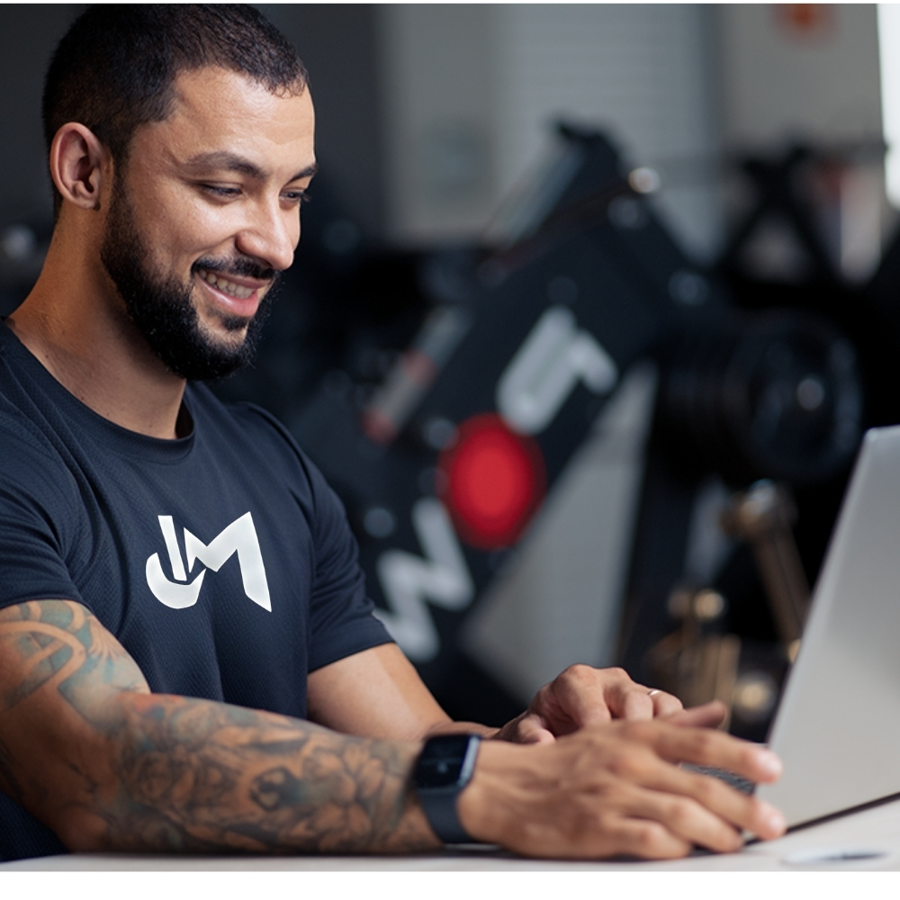

⚡ Próxima ação
Quando puder, envie seu check-in para que eu consiga acompanhar sua evolução com mais precisão.
Enviar check-inLeva menos de 2 minutos.

Seu próximo passo está aqui.
Consistência antes da intensidade. Use esta área para acompanhar sua semana, enviar seu check-in e manter clareza sobre o próximo passo.
Análise semanal ativa
Quando puder, envie seu check-in para que eu consiga acompanhar sua evolução com mais precisão.
Enviar check-inLeva menos de 2 minutos.
Sua semana já está em andamento.
Seu próximo passo está aqui: envie seu check-in quando puder para que os ajustes sejam mais precisos.
Use o treino no MFIT como base da semana, priorizando técnica, controle e regularidade.
Busque realizar o cardio combinado da forma mais sustentável possível dentro da sua rotina.
Procure manter a alimentação alinhada ao plano, sem transformar pequenos desvios em culpa ou compensações exageradas.
Manter pequenas decisões bem feitas ao longo da semana.
Sua orientação estratégica aparecerá aqui sempre que houver uma atualização.